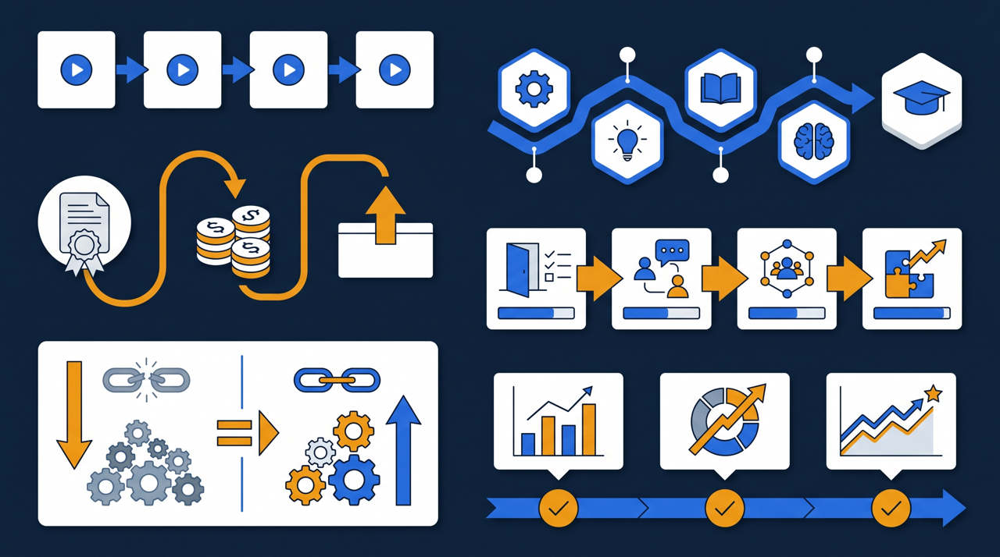
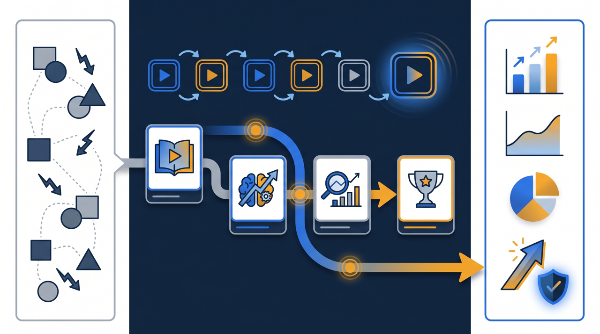
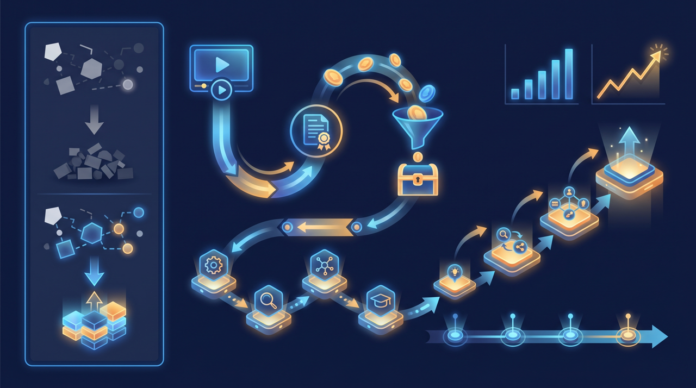

「動画研修ツールを入れたいけれど、費用は? 運用は? 既存の動画は使えるの?」——導入を検討し始めると、次々に疑問がわいてきますよね。この記事では、動画研修ツール・学習管理システム（LMS）の導入を考える企業から多く寄せられる質問を、費用・運用・教材・助成金・セキュリティといったテーマ別にまとめて整理します。導入前のチェックリストとして読んでみてください。

費用に関する疑問
導入を考えるとき、まず気になるのが費用ですよね。ここでよくある質問を整理します。
料金はどう決まるのか
動画研修ツールの料金は、利用する人数と使う機能の範囲によって決まることが多い傾向があります。受講者数や管理者数に応じて課金され、月額や年額で支払う形が主流です。人数が増えれば料金も上がる仕組みが一般的なので、「何人が使うのか」をまず見積もることが、費用を把握する第一歩になります。
ところで、料金を比較するときに見落としがちなのが、初期費用とサポート費用です。導入時の設定支援や、運用中の問い合わせ対応が料金に含まれているか、別途かかるのかは、ツールによって違います。月額の安さだけで選ぶと、後から支援が必要になったときに想定外の出費が出ることがあるので、トータルでいくらかかるかを確認しておくと安心です。
費用対効果はどう考えるか
費用だけを見ると負担に感じますが、これまで研修にかけていた会場費、講師の謝礼や人件費、移動の交通費、印刷費といったコストと比べてみると、見え方が変わってきます。とくに繰り返し開催している研修が多い会社では、それらの繰り返しコストが減る分を差し引いて考える必要があります。J-Net21のような中小企業向けの情報でも、人材育成は投資として捉える視点が紹介されていて、目先の費用だけでなく、何が減って何が得られるかで判断する考え方が役立ちます。
もう一つ、費用を考えるときに見落とされがちなのが、研修にかかる「時間のコスト」です。たとえば、講師役の社員が研修のたびに半日を取られているとしたら、その半日は本来の業務ができない時間です。集合研修のために全員のスケジュールを合わせる調整にも、見えない時間がかかっています。動画研修にすると、こうした時間の負担が減る傾向があり、その分を金額に換算してみると、ツールの費用と釣り合うかどうかが見えてきます。費用の判断は、ツールの料金表だけを見るのではなく、今かかっているお金と時間の両方を棚卸ししてから比べると、納得感のある結論にたどり着きやすいわけです。
運用に関する疑問
次に多いのが、「うちで運用できるのか」という不安です。
ITに詳しい人がいなくても大丈夫か
教材の登録、受講者の招待、進捗の確認といった日常の運用は、専門知識がなくても操作できるよう設計されたツールが増えています。とはいえ、導入時の設計——どんなコースを作るか、修了の条件をどうするか、誰にどの教材を割り当てるか——には、ある程度の準備が必要です。ここは支援を受けつつ、日々の運用は事務担当者が無理なく回せる体制にしておくと、特定の人に頼り切らずに済みます。
運用の手間はどれくらいか
導入後の手間は、最初の教材づくりが山で、それを越えると軽くなる傾向があります。一度コースを作ってしまえば、新しく人が入ったら招待するだけ。受講状況は自動で記録されるので、出欠を手で集計する必要がなくなります。むしろ、これまで研修のたびに発生していた日程調整や案内の手間が減る分、運用全体の負担は軽くなることが多いわけです。
ところで、運用を軽く保つコツは、最初から完璧を目指さないことにあります。すべての研修を一度に動画化しようとすると、教材づくりの山がいくつも重なって、担当者が疲れてしまいます。まずは開催回数の多い研修を1つだけ動画化し、運用を回してみる。慣れてきたら次の研修を足していく。この順番で進めると、教材づくりの負担を分散でき、現場も無理なくなじんでいきます。動き出してしまえば、現場から「この研修も動画にしてほしい」という声が出てくることもあり、そうなれば広げる流れが自然にできていくわけです。
担当者が変わっても続けられるか
運用で意外と大切なのが、担当者が変わっても続けられるかという視点です。教材や受講記録が担当者の個人PCに散らばっていると、引き継ぎのたびに「あの資料はどこか」を探すことになります。教材と記録を一つの仕組みにまとめておけば、誰が担当しても同じように運用でき、特定の人に依存せずに済みます。研修の運用を、個人の頑張りではなく組織の仕組みとして持っておくことが、長く続けるための条件になるんですよね。

教材に関する疑問
すでに研修動画を持っている会社からは、教材についての質問もよく出ます。
撮りためた動画は使えるか
多くのツールでは、手元にある動画ファイルをアップロードして教材として使えます。過去に撮影した研修録画や、マニュアル代わりに撮った動画を活かせる場合が多いので、すべてを一から作り直す必要はないことが多いんです。まずは手持ちの動画を棚卸しして、使えそうなものから載せていく、という進め方ができます。ただし、扱えるファイル形式や1本あたりの容量の上限はツールによって異なるため、導入前に確認しておくとつまずきにくくなります。
どんな動画から作ればよいか
これから動画を作る場合は、開催回数の多い研修から手をつけるのがおすすめです。新人向けの基礎研修のように、毎年・毎月のように繰り返している内容は、一度作れば何度も使えるため、手間が回収しやすい。逆に、年に一度しかやらない特殊な研修を最初に動画化しても、効果が見えにくいことがあります。繰り返しの多いものから、という順番が現実的なんですよね。
動画の作り方そのものについても、よく質問が出ます。「凝った編集が必要なのでは」と身構える方が多いのですが、最初から作り込む必要はないことが多いです。会場で講師が話していた内容を、カメラの前で話して録画する。スライドを使う研修なら、画面と音声を一緒に収録する。まずはこの程度から始めて、「会場に来なくても、これを見れば同じことが分かるか」を基準にすると、過不足のない教材になります。長い動画を1本そのまま流すより、テーマごとに10分前後の単位に区切るほうが、受講者がすきま時間に見やすく、見返したい部分にもたどり着きやすい傾向があります。きれいな映像作品を目指すより、伝わるかどうかを優先するほうが、結果的に使われる教材になるわけです。
助成金・制度に関する疑問
費用にかかわる話として、助成金についての質問も増えています。
助成金は使えるのか
研修の内容や進め方によっては、人材開発支援助成金のように、訓練にかかった経費や賃金の一部を助成する制度を活用できる場合があります。動画研修やeラーニングも、要件を満たせば対象になることがあります。ただし、対象となる訓練の要件や助成率、上限額といった条件は変わることがあるため、最新の公募要領や厚生労働省の案内を確認したうえで検討することが欠かせません。
助成金を使うときに気をつけることは
助成金を活用する場合、研修を「いつ、誰が、どれだけ受けたか」を示す書類が求められることが多い傾向があります。ここで効いてくるのが、受講記録が自動で残るツールです。受講日時や視聴時間、テストの合否といった記録が仕組みの中に残っていれば、実施を示す書類を整理しやすくなります。助成金の活用を視野に入れるなら、受講記録の残り方をツール選びの基準の一つに加えておくとよいでしょう。なお、制度の細かな要件は変わることがあるため、活用にあたっては所管する官公庁の案内や専門家への相談をおすすめします。
運用・セキュリティに関する疑問
最後に、情報の取り扱いに関する質問を整理します。
受講内容が外部に漏れないか
社内の研修には、業務のノウハウや機密にあたる情報が含まれることがあります。これが外部に漏れないかは、当然の心配ですよね。多くのツールでは、受講者ごとにログインを設けて関係者だけが見られるようにする、通信を暗号化する、視聴できる端末や期間を制限する、といった対策が用意されている傾向があります。機密情報を含む研修を扱う場合は、アクセスをどう管理するか、データがどこに保管されるかを、導入前に確認しておくと安心です。
現場が見てくれるか
これは導入後に最も多い悩みかもしれません。動画を用意して「見ておいてください」と案内するだけでは、なかなか見てもらえない傾向があります。受講を進めるには、1本を短く区切る、スマートフォンでも見られるようにする、確認テストや修了の条件を設けて学習のゴールを明確にする、受講状況を見える化して遅れている人に案内を出す、といった工夫がセットで必要になります。動画を作ることと、見られる設計にすることは別の作業だと捉えておくと、導入後のつまずきを減らせます。

導入の進め方に関する疑問
ツールそのものより前に、「そもそもどう進めればいいのか」という相談も多く寄せられます。
いきなり全社で始めるべきか
全社で一斉に始めるより、一部の部署や、開催回数の多い研修から小さく始めるほうが、つまずきにくい傾向があります。最初から大きく広げると、教材づくりの負担が一度に集中し、現場の戸惑いも大きくなります。まず一つの研修で運用を回してみて、受講の進み具合や現場の反応を見ながら、うまくいった形をほかへ広げていく。この順番なら、問題が起きても範囲が限られるため、修正しながら進められます。動き出してしまえば、現場から「この研修も動画にしてほしい」という声が出てくることもあり、そうした流れに乗って広げていくのが現実的です。
効果はどう測ればよいか
導入の効果は、いくつかの角度から見るとつかみやすくなります。受講率がどう変わったか、研修にかかっていた準備時間がどれだけ減ったか、新人の理解度や到達レベルが揃ってきたか。学習管理システム（LMS）には受講状況や確認テストの結果が記録されるため、こうした変化を数字で確かめやすくなります。導入して終わりにせず、定期的に状況を振り返り、教材や運用を見直していくと、効果がじわじわと積み上がっていくわけです。最初から完璧な成果を求めるより、使いながら良くしていく前提で進めるほうが、長続きしやすい傾向があります。
まとめ：疑問を整理してから比較する
動画研修ツールの導入は、費用・運用・教材・助成金・セキュリティと、確認すべき点が多岐にわたります。だからこそ、いきなり個別のツールを比べ始める前に、自社にとって何が疑問なのかを整理しておくことが大切です。
費用は「何人が使い、どの機能が要るか」で見積もる。運用は「日常運用を誰が回すか」を決めておく。教材は「手持ちの動画と、これから作るものを棚卸しする」。助成金は「受講記録が残るか」を基準に加える。セキュリティは「機密情報の扱いを確認する」。受講設計は「見られる工夫まで含めて準備する」。この6つの観点で整理してから比較すると、自社に合うツールを選びやすくなります。
ここで挙げた疑問の多くは、導入を検討する企業に共通するものです。一つずつ確認しながら、自社の研修をどう仕組みに変えていくか、無理のない進め方を探ってみてください。判断に迷う点があれば、研修の内製化や助成金の活用に詳しい相手に相談しながら進めるのも、遠回りに見えて確実な進め方になります。
よくある質問
多くの場合、利用する人数（受講者数や管理者数）と、使う機能の範囲によって料金が決まる傾向があります。月額や年額で課金されるものが主流で、人数が増えると料金も上がる仕組みが一般的です。見積もりを取る際は、想定する受講者数と、必要な機能（テスト・修了証・進捗管理など）を整理してから問い合わせると、比較しやすくなります。
教材の登録や受講者の招待、進捗の確認といった日常運用は、専門知識がなくても操作できるよう設計されたツールが増えています。導入時の設計や教材の作り込みは支援を受けつつ、日々の運用は事務担当者が無理なく回せる体制を整えると、特定の人に依存せず運用しやすくなります。
多くのツールでは、手元にある動画ファイルをアップロードして教材として使えます。過去に撮影した研修録画やマニュアル動画を活かせる場合が多いため、すべてを一から作り直す必要はないことが多いです。ただし、ファイル形式や容量の上限はツールによって異なるため、導入前に確認しておくと安心です。
研修の内容や進め方によっては、人材開発支援助成金のように、訓練にかかった経費や賃金の一部を助成する制度を活用できる場合があります。対象となる訓練の要件や助成の条件は変わることがあるため、最新の公募要領や厚生労働省の案内を確認したうえで検討することをおすすめします。受講記録が残るツールだと、実施を示す書類の整理がしやすい傾向があります。
セキュリティの考え方はツールによって異なります。受講者ごとにログインを設けて関係者だけが見られるようにする、通信を暗号化する、視聴できる端末や期間を制限する、といった対策が用意されているものが多い傾向があります。社内の機密情報を含む研修を扱う場合は、アクセス管理やデータの保管場所について導入前に確認しておくとよいでしょう。
1本を短く区切る、スマートフォンでも見られるようにする、確認テストや修了の条件を設けて学習のゴールを明確にする、受講状況を可視化して案内を出す、といった工夫で受講が進みやすくなります。動画を用意して「見ておいて」と案内するだけでは見られにくい傾向があるため、受講される設計まで含めて準備することが大切です。